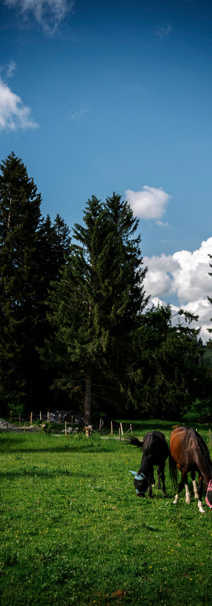

Schulklassen auf der Mühle
Idyllisch und ruhig auf fast 1000 m Höhe, mitten in Wald und Wiesen – ein guter Ort für eure Klassenfahrt.
Natur statt Bildschirm
Die alleinstehende Lage, der Gruppenraum und das große Gelände geben Kindern und Jugendlichen Raum, kreativ zu werden, zu spielen und Natur zu entdecken – ganz ohne Ablenkung.
Der Bach hinterm Haus hat früher das Mühlrad angetrieben – heute ist er das schönste Freiluft-Klassenzimmer. Dazu kommen die Tiere: Pferde striegeln, Hasen füttern, Verantwortung übernehmen. Und abends Stockbrot und Sternenhimmel am Lagerfeuerplatz.
- Platz für Klassen bis 35 Personen samt Begleitung
- Alleinstehende Lage – niemand stört, niemand wird gestört
- Gruppenraum für Programm, Spiele und Regentage
- Spielwiese, Tischtennis, Kicker und Lagerfeuerplatz
- Wanderungen direkt ab Haus

Für Lehrkräfte
Verpflegung nach Absprache oder Selbstversorgung in der Gästeküche. Wertach liegt an der B310 und ist gut mit dem Bus zu erreichen; Parkplätze gibt es am Haus. Für Ausflüge bieten sich der Grüntensee, Bad Hindelang und Füssen mit Schloss Neuschwanstein an.
Termine und Konditionen besprechen wir am liebsten persönlich: 08365 / 1628 oder Wertachermuehle@web.de.
